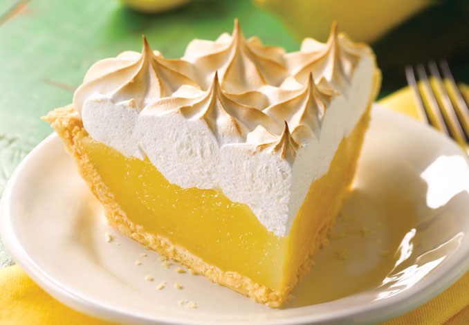

Lemon Pie

Description
Lemon meringue pie is a dessert pie, consisting of a shortened pastry base filled with lemon curd and topped with meringue.
Ingredients
- 1 baked pie crust
- 1 1/2 and 1/2 cups white sugar
- 1/2 and 1/4 teaspoon salt
- 1 1/2 and 1/3 cups water
- 1/2 cup cornstarch
- 4 eggs, separated
- 1/2 cup lemon juice
- 2 teaspoons lemon zest
- 3 tablespoons butter
Steps
- Combine 1 1/2 cups sugar, salt, and 1 1/2 cups water in a heavy saucepan. Place over high heat and bring to a boil. In a small bowl, mix cornstarch and 1/3 cup water to make a smooth paste. Gradually whisk into boiling sugar mixture. Boil mixture until thick and clear, stirring constantly. Remove from heat.
- In a small bowl, whisk together egg yolks and lemon juice. Gradually whisk egg yolk mixture into hot sugar mixture. Return pan to heat and bring to a boil, stirring constantly. Remove from heat and stir in grated lemon rind and butter or margarine. Place mixture in refrigerator and cool until just lukewarm.
- In a large glass or metal bowl, combine egg whites and salt. Whip until foamy. Gradually add 1/2 cup sugar while continuing to whip. Beat until whites form stiff peaks. Stir about 3/4 cup of meringue into lukewarm filling. Spoon filling into baked pastry shell. Cover pie with remaining meringue.
- Bake in preheated oven for 15 minutes, until meringue is slightly brown. Cool on a rack at for at least 1 hour before cutting.
Other recipes